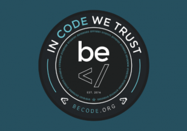

Bienvenue sur le cheatsheet de Markdown.

Objectif:
Répertorier toutes les possibilités de Markdown.
Table des matieres:
- Git
- Markdown
- citation
- Divers
- Gras & italic
- Images
- Liens
- Listes
- separation
- Titres
Qu'est ce que c'est?
Ceçi est un mémo sur le Markdown et le Terminal. Les instructions sont les suivantes : voir ici
Quand avons nous travaillé dessus?
Nous avons commencé le lundi 8 juin 2020 a 9h30 et sera terminé normalement pour mardi 16h30 (deadline).
Où étions nous? Que faisions nous?
Certains sont dans les locaux de becode d'autre en télétravail (covid oblige).
A quoi ça ressemble?
Un mémo crée à plusieurs en markdown à propos du markdown.
La progression?
Nous travaillons chacun de notre coté puis nous avons fait le tri par la suite.
Les technologies utilisées?
Vous pouvez utiliser le Markdown sur Github:
- [Gists](https://gist.github.com/ )
- Commentaires et pull request
- Fichier avec l'extension .md ou .markdown
La Team